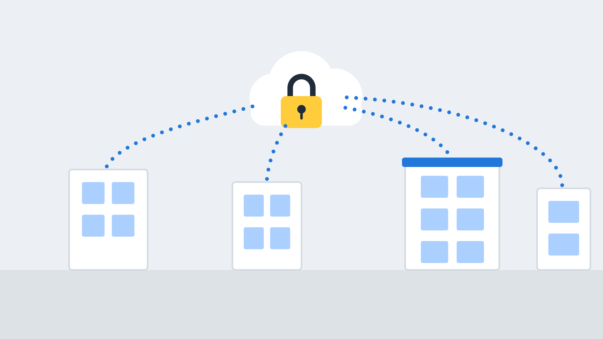

MPLS Networks
One private network for all your sites, with voice and key applications given priority.
One private network for all your sites
MPLS (Multiprotocol Label Switching) links your offices over a carrier-managed private network rather than the public internet. Traffic is kept separate from other customers, and voice and critical applications can be prioritised.
- Private, isolated connectivity between sites
- Quality of service for voice and video
- SLA-backed performance and repair
- One network manager to call

MPLS VPN: predictable performance across every site
Predictable performance across every site
Private network
Your traffic is kept apart from the public internet and other customers.
Voice prioritised
Quality of service keeps calls clear, even when the network is busy.
SLA-backed
Committed performance and repair times you can hold us to.
Sites work as one
Any office can reach any other, as if on one network.
Cloud connections
Add secure access to cloud and data centre services.
Managed for you
We handle design, ordering and ongoing changes.
MPLS vs SD-WAN vs VPN
MPLS is not the only way to link sites. We help you choose.
| Option | How it works | Strengths | Watch out for |
|---|---|---|---|
| MPLS | A private carrier-run network between sites. | Quality of service, SLAs, privacy | Slower to provision and change; usually costs more |
| Site-to-site VPN | Encrypted tunnels over normal internet connections. | Low cost and quick to set up | No guaranteed quality or SLA |
| SD-WAN | Software that manages several links, such as broadband, MPLS and 4G. | Flexible, can combine links | Performance depends on the underlying links |
Many organisations use a hybrid: MPLS or leased lines for critical sites, with broadband and 4G/5G links managed alongside. We will recommend whichever combination fits your sites and budget.
When MPLS makes sense for branch offices
MPLS is a strong choice where voice quality and uptime across several sites really matter, or where you have compliance requirements for private networks.
- Several offices sharing one phone system
- Voice and video between sites
- Regulated data that must stay off the public internet
- Branches that need guaranteed performance

How a managed WAN project works
Map your sites
We list each site, its users and what it needs.
Design
We design the network and agree the service levels.
Install
Circuits are ordered, installed and tested.
Manage
We support the network and handle changes.
MPLS FAQs
Is MPLS the same as a leased line?
No. A leased line is a dedicated circuit from one site to the network or internet. MPLS is the private network that joins several sites together, and each site connects to it with a circuit such as a leased line.
Is MPLS secure?
Traffic is carried over a private carrier network, kept separate from other customers. You can add encryption and firewalls where needed.
Is SD-WAN better than MPLS?
It depends. SD-WAN is more flexible and often cheaper, while MPLS gives stronger guarantees for real-time traffic. Many businesses use both.
Can new sites be added easily?
Yes, but provisioning a new circuit takes time, so plan ahead. We manage the process for you.
Explore more connectivity
Leased lines
Dedicated, uncontended internet and Ethernet circuits with speeds and SLAs to suit.
Read more →Lines and calls
PSTN, analogue and ISDN lines, call packages and your move to digital voice.
Read more →4G/5G backup
Automatic failover so your phones and internet keep working if your main line drops.
Read more →Get an MPLS network quote
Tell us about your sites and we will recommend a network design.